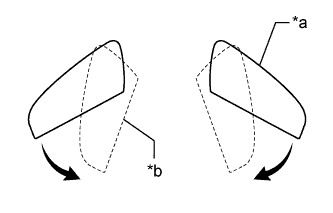
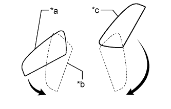
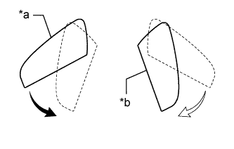
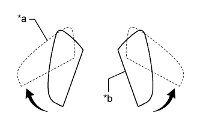
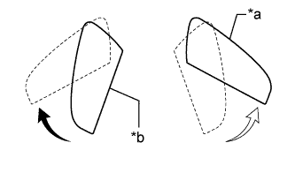

OUTER REAR VIEW MIRROR > ON-VEHICLE INSPECTION |
| 1. CHECK POWER RETRACTABLE MIRROR |
Turn the ignition switch to ACC.
|  |
At each position of the outer mirror body, check the retractable mirror operation when operating the retract switch of the outer mirror.
Move the mirrors to the driving position.
Press the retract switch.
Check that the right and left mirrors move from the driving position to the retracted position.
| *a | Driving Position |
| *b | Retracted Position |
|  |
Move the mirrors to the driving position.
Move one of the mirrors to the forward position by hand.
Press the retract switch.
Check that the mirror moves from the forward position to the retracted position.
Check that the other mirror moves from the driving position to the retracted position.
| *a | Driving Position |
| *b | Retracted Position |
| *c | Forward Position |
|  |
Move the mirrors to the driving position.
Move one of the mirrors to the retracted position by hand.
Press the retract switch.
Check that the mirror moves from the driving position to the retracted position.
| *a | Driving Position |
| *b | Retracted Position |
|  |
Move the mirrors to the retracted position.
Press the retract switch.
Check that the right and left mirrors move from the retracted position to the driving position.
| *a | Driving Position |
| *b | Retracted Position |
|  |
Move the mirrors to the retracted position.
Move one of the mirrors to the driving position by hand.
Press the retract switch.
Check that the mirror moves from the retracted position to the driving position.
| *a | Driving Position |
| *b | Retracted Position |
Check the operation of the outer mirror in relation to retract switch operations and engine switch condition changes.
When the mirror body is operating, turn the engine switch off and check that the mirror operation stops immediately.
Repeat the step above. This time, turn the engine switch on (ACC) and press the retract switch. Check that the mirror operates in the opposite direction.
Check the operation of the outer mirror when it is restrained by an obstacle.
When the mirror is moving to the retracted or driving position, restrain the mirror by hand. Check that the mirror stops moving.
With the mirror stopped partway, push the retract switch. Check that the mirror moves in the opposite direction it was moving when it was restrained.
| 2. CHECK MIRROR HEATER |
Turn the ignition switch to ON.
Check that pressing the rear defogger switch illuminates the indicator and warms the mirror surface.
Check that after approximately 15 minutes, the indicator light turns off and the mirror heater deactivates.